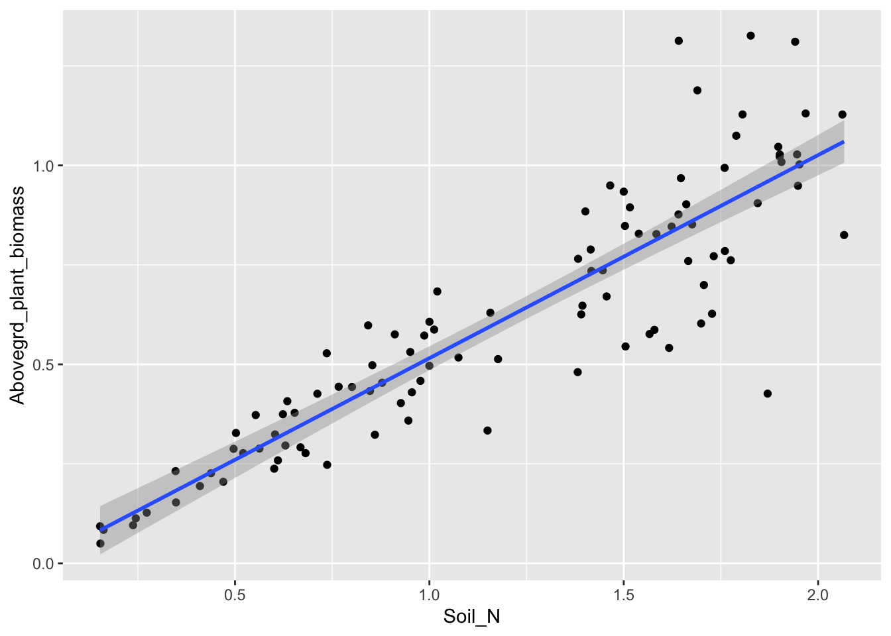
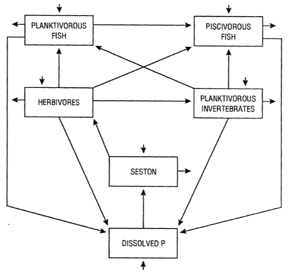

Figure 2.1: A statistical model of aboveground plant biomass as a function of available soil nitrogen.
Figure 2.2: Compartment models of other stuff
We model to aid understanding, because, at some level, the model is a quantitative and qualitative explanation for some phenomenon. We can use models to test hypotheses, guide experiments, and predict manage ecosystems and populations.
Statistical models (e.g., regression) are concerned with describing patterns and hypothesis testing. Process models (e.g., stock and flow models) are also descriptions of natural systems, but they include more mechanism and seek to describe mechanism and understand process. People sometimes call these mechanistic models.
A theory is a well supported hierarchical framework that contains clearly formulated postulates, based on a minimal set of assumptions, from which a set of predictions logically follows (???). Efficient theory is based to as much as possible on first principles, and relies on as few assumptins as possible.
In contrast to theory, models are specific implementations of theory and specific descriptions of nature. Remember that in principle, all models are wrong, but some are useful1 Box, G. E. P. (1979), “Robustness in the strategy of scientific model building”, in Launer, R. L.; Wilkinson, G. N., Robustness in Statistics, Academic Press, pp. 201–236..